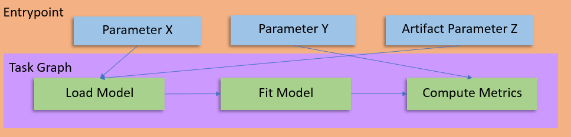
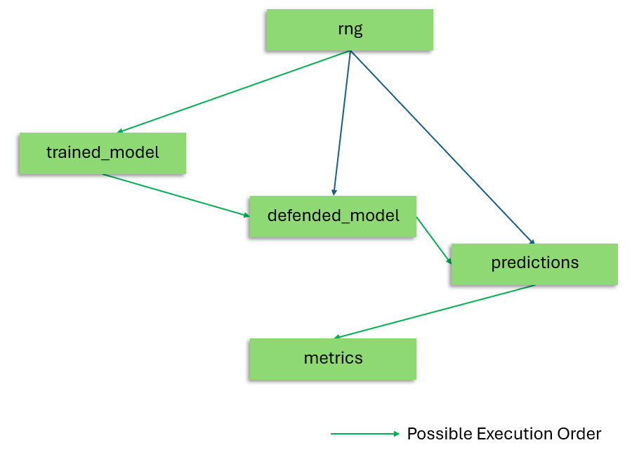

Task Graph#
Summary: What is a Task Graph?#
The task graph is the component of an entrypoint description that describes the steps of a workflow between plugin function tasks and the parameter inputs to each of those tasks. A directed acyclic graph (DAG) representing the dependencies between the various steps is constructed to ensure that the steps are executed in the correct order.

The primary function of the task graph is to describe the relationship between variables and plugins within an entrypoint. It describes dependencies between the various steps, as well as how the outputs, global variables, and artifacts are input to the invoked plugins.#
Summary: What is a Step?#
A step is one component of the task graph that correlates to a plugin task invocation with a given set of parameters. A single step has several components:
a step name, which functions as a variable storage for the output of the invoked task.
a task name, which references the plugin task to invoke by name. At runtime, plugins associated with the entrypoint will be searched for a matching task.
a list of parameters, which are passed to the referenced plugin task during invocation.
Below is an example task graph. In the first step, the step name is rng, the task name is configure_rng and the list of parameters contains
a single member named seed that is being passed a value of 1234.
rng:
configure_rng:
seed: 1234
trained_model:
train:
model: $model_artifact
dataset: $training_ds
epochs: $num_epochs
dependencies: [rng]
predictions:
predict:
model: $defended_model
dataset: $testing_ds
samples: $num_samples
dependencies: [rng]
defended_model:
adversarial_training:
model: $trained_model.model
dataset: $adversarial_ds
split: 0.5
dependencies: [rng]
metrics:
run_metrics:
predictions: $predictions
Variables#
Step outputs can be referenced by the step name. This is useful for passing the
output of one step as a parameter to another. For example: $trained_model will take the output stored in the
step with the name trained_model.
Alternatively, if the plugin task has named output (perhaps named model, it can be accessed with
$trained_model.model). The names of these outputs are defined at plugin task registration, and the number
of outputs of the registered task should match the number of outputs of its associated function.
Global Variables#
Entrypoints are parameterizable, and these parameters can be referenced the same way as variables. For example,
$num_samples could reference an entrypoint parameter and be used as an input to a task.
Artifact Variables#
Entrypoints can also have artifact parameters, which are referenced in the same way. $training_ds could reference
the output of an artifact deserialization plugin task, and the entire artifact can then be used as input to a plugin
task.
Explicit Dependencies and DAG creation#
While a dependency on a variable will automatically be represented in the DAG, there are some cases where it may be desirable to have a step always run after another step. For example, system configurations such as setting RNG seeds or designating the worker as GPU enabled may not produce an output, but may still be required for multiple other steps in the task graph.
Consider the following example task graph as a candidate for the DAG - explicit dependencies are declared for the defended_model,
predictions and trained_model steps on the configure_rng step. Additionally, the defended_model step has an implicit
dependency on the trained_model step, and the predictions step has an implicit dependency on the defended_model step (by using
the output of those steps).

The DAG generated from the above task graph. Dioptra creates dependencies in the DAG only based off the input/output chaining of plugin tasks. If a user wants to add additional explicit dependencies in the task graph, this can be done. See Additional Dependencies - Managing Dependencies for more details on this.#
See Also#
Task Graph Syntax - Reference for task graph construction
Entrypoint Explanation - Entrypoints explanation, of which task graphs are a component
Create Plugins - Step-by-step guide on building plugins
Create Entrypoints - Step-by-step guide on building entrypoints